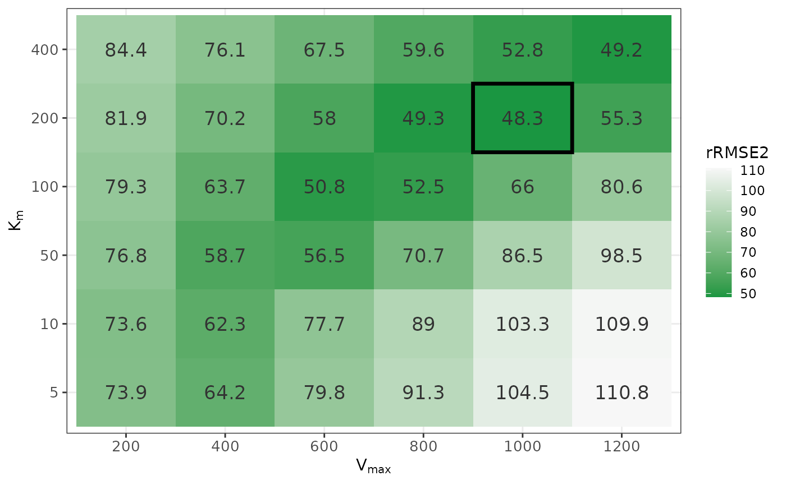

Parameter Sweeping and Visualisation
Source:vignettes/parameter_sweeping.Rmd
parameter_sweeping.RmdParameter sweeping systematically explores a grid of candidate
parameter values and identifies the combination that best reproduces the
observed data. In nlmixr2autoinit, this approach is used to
derive initial estimates for model structures that cannot be solved
analytically from one-compartment PK analysis, specifically:
- Multi-compartment models (2-compartment and 3-compartment)
- Nonlinear elimination models (Michaelis-Menten kinetics: and )
This vignette explains how to run parameter sweeping independently and how to visualise the sweep results to understand the parameter space.
Running Parameter Sweeping
We can bypass the automated base parameter calculation from
nlmixr2autoinit and instead specify
,
,
and
directly. This is useful when we are only interested in exploring the
complex model parameters such as
and
,
without re-running the full estimation pipeline.
For example, sim_sens_1cmpt_mm() then performs the sweep
for
and
in a one-compartment model with Michaelis-Menten elimination for IV
data.
library(nlmixr2autoinit)
#> Loading required package: nlmixr2data
# Example: IV dosing scenario with automatic Vmax and Km
out1 <- sim_sens_1cmpt_mm(
dat = Bolus_1CPTMM,
sim_vmax = list(mode = "manual", values = c(200, 400, 600, 800, 1000, 1200)),
sim_km = list(mode = "manual", values = c(5, 10, 50, 100, 200, 400)),
sim_vd = list(mode = "manual", values = 70),
sim_ka = list(mode = "manual", values = NA),
route = "iv"
)We can inspect the first few rows of the simulated output and see
that multiple goodness-of-fit metrics are returned for each parameter
combination. Definitions of these metrics are provided in
?metrics..
Here we focus on rRMSE2, the symmetric relative root
mean squared error, which normalizes each predicted–observed difference
by the mean of the predicted-observed pair and is used here to compare
parameter sets.
head(out1)
#> # A tibble: 6 × 11
#> Vmax Km Vd Ka APE MAE MAPE RMSE rRMSE1 rRMSE2
#> <dbl> <dbl> <dbl> <dbl> <dbl> <dbl> <dbl> <dbl> <dbl> <dbl>
#> 1 200 5 70 NA 5572697. 802. 608. 1400. 87.9 73.9
#> 2 200 10 70 NA 5594331. 805. 621. 1402. 88.0 73.6
#> 3 200 50 70 NA 5753722. 828. 729. 1413. 88.8 76.8
#> 4 200 100 70 NA 5899008. 849. 821. 1425. 89.5 79.3
#> 5 200 200 70 NA 6096946. 877. 933. 1443. 90.6 81.9
#> 6 200 400 70 NA 6344339 913. 1059. 1468. 92.2 84.4
#> # ℹ 1 more variable: Cumulative.Time.Sec <dbl>
# # A tibble: 6 × 11
# Vmax Km Vd Ka APE MAE MAPE RMSE rRMSE1 rRMSE2 Cumulative.Time.Sec
# <dbl> <dbl> <dbl> <dbl> <dbl> <dbl> <dbl> <dbl> <dbl> <dbl> <dbl>
# 1 200 5 70 NA 5572697. 802. 608. 1400. 87.9 73.9 0.33
# 2 200 10 70 NA 5594331. 805. 621. 1402. 88.0 73.6 0.64
# 3 200 50 70 NA 5753722. 828. 729. 1413. 88.8 76.8 0.99
# 4 200 100 70 NA 5899008. 849. 821. 1425. 89.5 79.3 1.29
# 5 200 200 70 NA 6096946. 877. 933. 1443. 90.6 81.9 1.6
# 6 200 400 70 NA 6344339 913. 1059. 1468. 92.2 84.4 1.92Visualising Sweep Results
We can visualize the sweep results as a heatmap to examine how model
fit changes across combinations of
and
,
with lower rRMSE2 indicating better fit. In this example,
the optimal parameter combination is identified at
and
,
which gives the lowest rRMSE2 among all tested values.
library(ggplot2)
best <- out1[which.min(out1$rRMSE2), ]
p1<-ggplot(out1, aes(x = factor(Vmax), y = factor(Km), fill = rRMSE2)) +
geom_tile() +
geom_tile(
data = best,
aes(x = factor(Vmax), y = factor(Km)),
fill = NA,
color = "black",
linewidth = 1.2
) +
geom_text(aes(label = round(rRMSE2, 1)), size = 4.5, color = "grey20") +
scale_fill_gradient(
low = "#1a9641",
high = "#f7f7f7",
name = "rRMSE2"
) +
labs(
x = expression(V[max]),
y = expression(K[m])
) +
theme_bw() +
theme(
axis.title = element_text(size = 11, face = "bold"),
axis.text = element_text(size = 10)
)
print(p1)
See Also
-
Integration with nlmixr2 —
manual model building using estimates from
getPPKinits() -
Integration with nlmixr2auto
— automated model selection using
nlmixr2auto